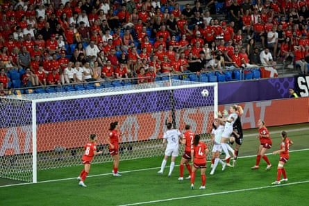

Switzerland were denied a fairytale start to their home Euros as a goal from Ada Hegerberg and an own goal gave an unconvincing Norway three points .
Nadine Riesen’s first-half opener had fans spiralling, hope and ecstasy pouring from every corner of the ground, but their profligacy would prove costly as a moment of magic from Hegerberg and then Caroline Graham Hansen to force Norway’s second turned the game on its head.
There were doubts over the capabilities of the Nati coming into their home Euros. Ramona Bachmann’s anterior cruciate ligament injury denied the host nation a figurehead, Lia Wälti’s fitness was questioned after a stop-start season for Arsenal and only Finland and Wales sat below them in the Fifa world rankings.
There was no dampened optimism from the sea of red that marched towards the stadium for an hour in the searing heat, ready to spend an evening peeling sweaty backs off plastic seats as the temperature remained at 32C at kick off.
The mood was electric inside St Jakob-Park, the home of FC Basel, and although the 37,500-capacity stadium was no match for the 2022 opener at Old Trafford in scale, it made up for it in volume. “Wäl-ti, Wäl-ti, Wäl-ti” the fans chanted towards their talismanic captain, whose visage adorns Adidas billboards across the city facing off with Germany’s Jule Brand. If a crowd could compensate for the small pool of players available, the league in Switzerland not yet being fully professional and only five of the 23-player squad playing their domestic football on home soil, then it did its best to do so.
The energy from the crowd was matched by the energy on the pitch. The Nati had come to compete, not just host. Expectations around their opponents were cautiously high. Norway possess individual attacking talent that would be the envy of any team and yet they have struggled in international tournaments, a team of gal áctico talents that at times look like they don’t know each other. At the World Cup in 2023 they scrapped through the group stage by the skin of their teeth, losing to Japan in the round of 16, and have failed to escape the group in the previous two editions of the European Championship, including suffering a humiliating 8-0 defeat to England in 2022. Drawn in, on paper, the easiest group of the tournament, there was reason for optimism and the recruitment of England’s Gemma Grainger to lead the side has led to an upswing in optimism, if not results.
Hegerberg heads in Norway’s equaliser.Photograph: Kristian Skeie/Uefa/Getty Images
If this was their time to make a statement, they didn’t present their case in the first half. Instead, it was the home team, led by Pia Sundhage, that impressed. There was an energy to the Swiss and their wingers in particular had great joy in behind Norway’s wing-backs. Wälti and Géraldine Reuteler both tested the goalkeeper Cecilie Fiskerstrand from distance and their four corners inside 15 minutes was a reflection of a fighting spirit.
Reuteler stung the bar soon after and the opening goal to reward the patient and encouraging crowd arrived four minutes later. Riesen, given an acre of space on the left, swung herself towards the box before sending in a low cross for Smilla Vallotto. She failed to control the ball or get a shot away but Riesen was on hand to collect, creeping it past Fiskerstrand and in.
The Swiss began the second half as they had the first, but Norway pulled themselves back into the match out of nowhere nine minutes after the restart, Hegerberg powering in a header from close range after the Swiss goalkeeper Livia Peng had flapped at a rare Norway corner. It was a flattering scoreline for the favourites and they punished the hosts for not capitalising on their dominance four minutes later, a quiet Graham Hansen bursting to life and escaping 18-year-old Iman Beney on the left before hooking the ball into the middle toward Hegerberg. Julia Stierli got in ahead of the Champions League record goalscorer but deflected the ball into her own net. For the first time the Norwegian fans could be heard over the Swiss, having previously been drowned out and camouflaged, red shirts among red shirts.
It was almost disaster for the hosts in the 67th minute when Reuteler handled from a corner and the referee pointed to the spot, but Hegerberg put her penalty wide.
After that reprieve, Riesen went down under pressure from Mathilde Harviken at the other end, contact looked minimal, but the decision mattered little as VAR overturned the initial penalty decision for a marginal offside in the build-up.
Switzerland fought to the end but could not find the final ball that would give them a point. Defeat will hurt, but this was a performance full of promise, one that will act as a warning to Finland and Iceland of what is to come but also took the fans watching on a journey full of passion that will likely reap rewards.